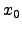
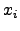
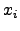
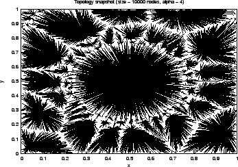
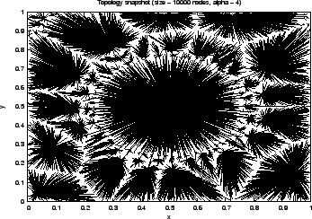

Gian Paolo Jesi (jesi@cs.unibo.it)
This tutorial teaches you how to build from scratch a new peersim ( peersim project page: http://sourceforge.net/projects/peersim) topology generator. In order to understand this tutorial, the reader is encouraged to start reading the first peersim tutorial (http://peersim. sourceforge.net/peersim_HOWTO.html) to have an idea of the basic concepts that will not be discussed any further in this document.
The aim of this tutorial is to be as pratical as possible; the goal is to give the reader ideas about technical or intermediate level features of peersim and to encurage him/her to experiment further. The full source code discussed in this document is available via CVS at peersim project page in the peersim.example.hot class package.
The network abstraction in peersim is a (sometimes huge) array of Node structures (interfaces); because of the size of the network and to overcome scalability problems, usually in large P2P networks each node knows about the existence of a very small subset of other nodes (ex: order of log(N) where N is the whole network size). Thus each node has a short list of other node references, usually called "neighbors", build accordingly to some kind of strategy or rule.
Thus, we can say that a topology is how nodes are arranged (linked) together and clearly this depends upon the particular choosen rule. Examples of topology are the following (not exaustive at all):
In this document, we have choosen to code a particular topology generator
to build internet-like tree topologies. The building process is based
on the preferential attachment approach. The rule applied is
quite simple and takes into account geometric and network constraints
to better mimic real world network. The preferential attachment choice
can be affected by a parameter ( ) that amplifies or reduces the
geometric location influence in favor of the path distance.
) that amplifies or reduces the
geometric location influence in favor of the path distance.
The rule strategy is the following: we consider a square unit region
D, then we start with node  choosen at random and we set  (it is the root node). For each i with
(it is the root node). For each i with  we choose a
new node x(i) in the region
we choose a
new node x(i) in the region  and we connect it to an early
inserted node  that minimize the following formula:
and we connect it to an early
inserted node  that minimize the following formula:
where:
After having choosen a node , we set
 . At
the end we obtain a tree rooted in .
. At
the end we obtain a tree rooted in .
We have extended this model to improve robustness allowing every node to have exactly d outbound neighbors instead of only one. This means that at the time of joining the network, each node should have at least d candidates to be selected as neighbors. To achieve this property, as a first step we select at random exactly d root nodes and we connect them together in a ring fashion (a doubly linked list). In this way each ordinary node has at least d nodes (the d roots) to choose from in order to select its neighbors; in other words, each node has to select d nodes that minimize the function above.
To get further details about this model, we suggest the following readings:
The model should generate a topology that exibits a power-law bound on the in-degree sequence of nodes; but, as stated in the second previously listed paper, this power-law prediction is not true.
In order to run this model in peersim we need to write java classes extending some peersim tipical interfaces. Very in brief, we need:
As we stated so far, the protocol code is minimal:
import peersim.core.IdleProtocol;
public class InetNodeProtocol extends IdleProtocol {
// coordinates in space:
public double x;
public double y;
public int in_degree;
public int hops;
public boolean isroot;
/** Creates a new instance of hotNodeProtocol */
public InetNodeProtocol(String prefix, Object obj) {
super(prefix);
in_degree = 0;
hops = 0;
isroot = false;
}
public Object clone() throws CloneNotSupportedException {
InetNodeProtocol af = (InetNodeProtocol) super.clone();
...
return af;
}
public void nextCycle(peersim.core.Node, int protocolID) {
}
The nextCycle() method is empty, so it's presence is completely optional. The class is basically a structure incapsulated in an object.
This initializer can be considered as a public interface to the model.
From the outside (means from the peersim configuration file) only few
main parameters are needed, such as the Linkable enabled protocol,
the outbound degree and the  parameter. The constructor method
takes care of collecting these parameters or to set up the corrisponding
default values The actual structure generation is performed elsewhere.
parameter. The constructor method
takes care of collecting these parameters or to set up the corrisponding
default values The actual structure generation is performed elsewhere.
public class InetInitializer implements peersim.dynamics.Dynamics {
/**
* String name of the parameter that defines the protocol to initialize.
* Parameter read will has the full name
* <tt>prefix+"."+PAR_PROT</tt>
*/
public static final String PAR_PROT = "protocol";
/**
* String name of the parameter about the out degree value.
*/
public static final String PAR_OUTDEGREE = "d";
/**
* String name of the parameter used as a weight.
*/
public static final String PAR_ALFA = "alfa";
/**
* String name of the parameter used as a maximum x or y coordinate. All the
* nodes are on a square region.
*/
public static final String PAR_MAX_COORD = "max_coord";
....
/** Creates a new instance of InetInitializer */
public InetInitializer(String prefix) {
// super(prefix);
pid = Configuration.getPid(prefix+"."+PAR_PROT);
d = Configuration.getInt(prefix+"."+PAR_OUTDEGREE);
alfa = Configuration.getDouble(prefix+"."+PAR_ALFA);
graph_filename = "cmplxnet_d"+ d + "_alfa"+alfa+".dat";
dg_filename = "degree_d"+ d + "_alfa"+alfa+".dat";
maxcoord = Configuration.getDouble(prefix + "." + PAR_MAX_COORD, 1.0);
if ( !graph_filename.equals("") ) {
try { graph_fileout = new PrintWriter(new FileWriter(graph_filename));
System.out.println(prefix +" filename: "+graph_filename +" selected");}
catch (Exception e) {;}
}
if ( !dg_filename.equals("") ) {
try { dg_fileout = new PrintWriter(new FileWriter(dg_filename));
System.out.println(prefix +" filename: "+dg_filename +" selected");}
catch (Exception e) {;}
}
}
}
The modify() method is defined by the Dynamics interface; it invokes a specialized factory object that works on top of a OverlayGraph type object (actual implementation of the Graph interface). This object provides the high level abstraction of a graph on the simulator overlay network; in this way, it allows the application to use many well known graph algorithms and operations (many operations can be found in peersim.graphGraphAlgorithms class). The operations performed on it are reflected on the actual topology (ex: adding an edge).
public void modify() {
OverlayGraph ogr = new OverlayGraph(pid);
InetFactory.InetTree(ogr, CommonRandom.r, pid, maxcoord, d, alfa );
graphToFile(ogr);
dgDistribToFile(ogr);
}
}
The other two method invocation in the modify() method are
used to write data on disk. In the first one, for each node  the
the  and
and  coordinates are collected and then for each neighbor
coordinates are collected and then for each neighbor  of node
of node
 the cordinates are written in the following order:
the cordinates are written in the following order:
n.neighbor(i).x n.neighbor(i).y \newline n.x n.y \newline \newline}
The particular line triplet formatting order suits the gluplot needs.
Please note that the for loop starts from index  , not from 0; this means
that the root node(s) is not directly considered because it has not any
outbound connections, but only inbound connections. Nevertheless the root
node(s) are plotted inspecting the nodes that are linked directly to it.
, not from 0; this means
that the root node(s) is not directly considered because it has not any
outbound connections, but only inbound connections. Nevertheless the root
node(s) are plotted inspecting the nodes that are linked directly to it.
private void graphToFile(peersim.graph.Graph g) {
if (graph_fileout != null) {
try {
for (int i = d ; i < g.size() ; i++ ) {
Node current = (Node)g.getNode(i);
double x_to = ((InetNodeProtocol)current.getProtocol(pid)).x;
double y_to = ((InetNodeProtocol)current.getProtocol(pid)).y;
Iterator it = (Iterator)g.getNeighbours(i).iterator();
while (it.hasNext()) {
int index = ((Integer)it.next()).intValue();
Node n = (Node)g.getNode(index);
double x_from = ((InetNodeProtocol)n.getProtocol(pid)).x;
double y_from = ((InetNodeProtocol)n.getProtocol(pid)).y;
graph_fileout.println(x_from+" "+y_from);
graph_fileout.println(x_to+" "+y_to);
graph_fileout.println("");
}
}
graph_fileout.close();
}
catch (Exception e) {;}
}
}
The second data collecting method builds an array of indegree frequencies and an array of indegree probability and dumps the second collection to file.
private void dgDistribToFile(peersim.graph.Graph g) {
if (dg_fileout != null) {
int size = g.size();
try {
int[] dgfrq = new int[size];
double[] dgprob = new double[size];
for (int i = 0 ; i < size ; i++) { // do not plot leaves
Node n = (Node)g.getNode(i);
InetNodeProtocol protocol = (InetNodeProtocol)n.getProtocol(pid);
int degree = protocol.in_degree;
dgfrq[degree]++;
}
double sum = 0;
for (int i = size-1 ; i > 0 ; i--) {
dgprob[i] = (dgfrq[i] + sum)/size;
sum += dgfrq[i];
}
// do not count index 0: 'cos the leafs degree is clearly 0!
for (int i = 0 ; i < dgprob.length ; i++ ) {
double k = (double)i/size;
dg_fileout.println(k+" "+dgprob[i]);
}
dg_fileout.close();
}
catch (Exception e) {e.printStackTrace();
System.out.println(e);}
}
}
}
This class is the core one. The actual topology initialization is performed
here. Because of the factory pattern, al the methods in this class are
static. There is no need of getting parameters from the configuration file,
because they have been already collected by the initializer class; thus
the factory is completely hidden.
This implementation is an extention of the peersim standard topology
factory (peersim.graph.Graph Factory).
The only public method is the one that actually builds the topology: InetTree(); as parameters it gets all the parameters that the initializer class has collected. The steps performed are the following:
The other present methods are all private and can be considered as utility methods. Infact their function is quite straightforward and can be guessed by the method signature; nevertheless a few comments are presented in the following table:
| getParents() | get the the current node best d candidates to connect to |
| hops() | return the graph distance in terms of hops from the root of the node given as a parameter |
| minHops() | return the minimum hop valued node between the specified nodes |
| distance() | get the standard Euclideian distance between two nodes |
import hot.HotNodeProtocol;
import peersim.graph.*;
import peersim.core.Node;
import peersim.core.Linkable;
import peersim.core.Network;
import peersim.config.Configuration;
import java.util.Random;
import java.util.ArrayList;
import java.util.Arrays;
public class InetFactory extends peersim.graph.GraphFactory {
private static final String DEBUG_STRING = "inet.InetFactory: ";
public InetFactory() {
super();
}
public static Graph InetTree(Graph g, Random rnd, int pid, double maxcoord,
int outdegree, double alfa) {
int size = g.size(); // size of the network
System.out.println(DEBUG_STRING+"size: "+size+" outdegree: "+outdegree);
// build outdegree roots
System.out.println(DEBUG_STRING+"Generating "+outdegree+" root(s),
means out degree "+outdegree+"...");
for(int i = 0 ; i < outdegree ; ++i) {
Node n = (Node)g.getNode(i);
HotNodeProtocol prot = (HotNodeProtocol)n.getProtocol(pid);
prot.isroot = true;
prot.hops = 0;
prot.in_degree = 0;
if (outdegree == 1 ) {
prot.x = maxcoord/2;
prot.y = maxcoord/2;
}
else { // more than one root
if (rnd.nextBoolean() ) {
prot.x = maxcoord/2 + (rnd.nextDouble() * 0.1);
}
else {
prot.x = maxcoord/2 - (rnd.nextDouble() * 0.1);
}
if (rnd.nextBoolean() ) {
prot.y = maxcoord/2 + (rnd.nextDouble() * 0.1);
}
else {
prot.y = maxcoord/2 - (rnd.nextDouble() * 0.1);
}
System.out.println("root coord: "+prot.x+" "+prot.y);
}
}
// Set coordinates x,y and set indegree 0
System.out.println(DEBUG_STRING+"Generating random cordinates for nodes...");
for (int i = outdegree ; i < size ; i++) {
Node n = (Node)g.getNode(i);
HotNodeProtocol prot = (HotNodeProtocol)n.getProtocol(pid);
if (maxcoord == 1.0) {
prot.x = rnd.nextDouble();
prot.y = rnd.nextDouble();
}
else {
prot.x = rnd.nextInt((int)maxcoord);
prot.y = rnd.nextInt((int)maxcoord);
}
prot.in_degree = 0;
}
// Connect the roots in a ring if needed (thus, if there are more than 1
// root nodes.
if (outdegree > 1) {
System.out.println(DEBUG_STRING+"Putting roots in a ring...");
for (int i = 0 ; i < outdegree ; i++) {
Node n = (Node)g.getNode(i);
((HotNodeProtocol)n.getProtocol(pid)).in_degree++;
n = (Node)g.getNode(i+1);
((HotNodeProtocol)n.getProtocol(pid)).in_degree++;
g.setEdge(i, i+1);
g.setEdge(i+1, i);
}
Node n = (Node)g.getNode(0);
((HotNodeProtocol)n.getProtocol(pid)).in_degree++;
n = (Node)g.getNode(outdegree);
((HotNodeProtocol)n.getProtocol(pid)).in_degree++;
g.setEdge(0, outdegree);
g.setEdge(outdegree, 0);
}
// for all the nodes other than root(s), connect them!
for (int i = outdegree ; i < size ; ++i ) {
Node n = (Node)g.getNode(i);
InetNodeProtocol prot = (InetNodeProtocol)n.getProtocol(pid);
prot.isroot = false;
// look for a siutable parent node between those allready part of the
// overlay topology: alias FIND THE MINIMUM!
Node candidate = null;
int candidate_index = 0;
double min = Double.POSITIVE_INFINITY;
if (outdegree > 1) {
int candidates[] = getParents(g, pid, i, outdegree, alfa);
for (int s = 0 ; s < candidates.length ; s++) {
g.setEdge(i, candidates[s]);
System.out.print(i+", ");
}
prot.hops = minHop(g, candidates, pid) + 1;
}
else { // degree 1:
for (int j = 0 ; j < i ; j++) {
Node parent = (Node)g.getNode(j);
InetNodeProtocol prot_parent = (InetNodeProtocol)parent.getProtocol(pid);
double value = hops(parent, pid) +
(alfa * distance(n, parent, pid));
if (value < min) {
candidate = parent; // best parent node to connect to
min = value;
candidate_index = j;
}
}
prot.hops = ((InetNodeProtocol)candidate.getProtocol(pid)).hops + 1;
g.setEdge(i, candidate_index);
((HotNodeProtocol)candidate.getProtocol(pid)).in_degree++;
}
}
System.out.println(DEBUG_STRING+"Graph generation finished!");
return g;
}
private static int[] getParents(Graph g, int pid, int cur_node_index,
int how_many, double alfa) {
int result[] = new int[how_many];
ArrayList net_copy = new ArrayList(cur_node_index);
// fill up the sub net copy:
for (int j = 0 ; j < cur_node_index ; j++) {
net_copy.add(j, (Node)g.getNode(j));
}
// it needs exactly how_many minimums!
for (int k = 0 ; k < how_many ; k++) {
int candidate_index = 0;
double min = Double.POSITIVE_INFINITY;
// for all the elements in the copy...
for (int j = 0 ; j < net_copy.size() ; j++) {
Node parent = (Node)net_copy.get(j);
HotNodeProtocol prot_parent = (HotNodeProtocol)parent.getProtocol(pid);
double value = hops(parent, pid) + (alfa *
distance((Node)g.getNode(cur_node_index), parent, pid));
if (value < min) {
min = value;
candidate_index = j;
}
}
result[k] = candidate_index; // collect the parent node
net_copy.remove(candidate_index); // delete the min from the net copy
}
return result;
}
private static int hops(Node node, int pid) {
return ((HotNodeProtocol)node.getProtocol(pid)).hops;
}
private static int minHop(Graph g, int[] indexes, int pid) {
int min = Integer.MAX_VALUE;
for (int s = 0 ; s < indexes.length ; s++) {
Node parent = (Node)g.getNode(indexes[s]);
int value = ((HotNodeProtocol)parent.getProtocol(pid)).hops;
if (value < min) {
min = value;
}
}
return min;
}
private static double distance(Node new_node, Node old_node, int pid) {
// Eucleidian distance code...
}
}
In order to make the model run, a proper peersim configuration file is needed. The one presented in the following lines may suits the reader needs:
# Complex Network file: random.seed 1234567890 simulation.cycles 1 overlay.size 10000 overlay.maxSize 10000 protocol.0 hot.InetNodeProtocol #protocol.0.maxcoord 1000 init.0 hot.InetInitializer init.0.alfa 20 init.0.protocol 0 init.0.d 1
It produces a 10000 node overlay network with the parameters listed in
the init.0 section.
The figures in the table shows the produced topology and highlights the
parameter  importance. Infact it affects the clustering behaviour of
the system and it is tightly correlated to the size of the network. If
importance. Infact it affects the clustering behaviour of
the system and it is tightly correlated to the size of the network. If
 il lower than
, the topology becomes more and more
clusterized (as show in the first two figures); with extremely low
il lower than
, the topology becomes more and more
clusterized (as show in the first two figures); with extremely low  ,
the topology becomes a star. On the other end, if
,
the topology becomes a star. On the other end, if  is grater than
, the topology tends to be random and not clusterized at all
(the second row of images). For deeper details, please consult the previously
listed papers.
is grater than
, the topology tends to be random and not clusterized at all
(the second row of images). For deeper details, please consult the previously
listed papers.
All the images has been produced using only one root node and only
one outbound connection per node. Using two or more outbound connection
per node leads to a massively crowded plot, so it's not a very nice picture
to plot!
The degree distribution related to the generated star topology
(Figure1) is not
shown (it's simply a straight line).
Clearly the plots show that there is not any evidence about in-degree
power-law distribution; only in the case of  , the corrisponding
plot exibits a power-law like behaviour at least for a subset of the nodes,
but this is very different from what first listed paper was talking about.
, the corrisponding
plot exibits a power-law like behaviour at least for a subset of the nodes,
but this is very different from what first listed paper was talking about.
This document was generated using the LaTeX2HTML translator Version 2K.1beta (1.48)
Copyright © 1993, 1994, 1995, 1996,
Nikos Drakos,
Computer Based Learning Unit, University of Leeds.
Copyright © 1997, 1998, 1999,
Ross Moore,
Mathematics Department, Macquarie University, Sydney.
The command line arguments were:
latex2html -t 'Peersim HOWTO 2' -split 0 -nonavigation -noaddress -show_section_numbers tutorial2.tex
The translation was initiated by Gian_Paolo Jesi on 2004-11-02
![\includegraphics[scale=0.6]{pic_alfa01.eps}](img18.png)
![\includegraphics[scale=0.6]{pic_alfa4.eps}](img20.png)
![\includegraphics[scale=0.6]{pic_alfa20.eps}](img22.png)
![\includegraphics[scale=0.6]{picdegree_alfa20.eps}](img23.png)
![\includegraphics[scale=0.6]{pic_alfa100.eps}](img24.png)
![\includegraphics[scale=0.6]{picdegree_alfa100.eps}](img25.png)
![\includegraphics[scale=0.6]{pic_alfa2000.eps}](img26.png)
![\includegraphics[scale=0.6]{picdegree_alfa2000.eps}](img27.png)